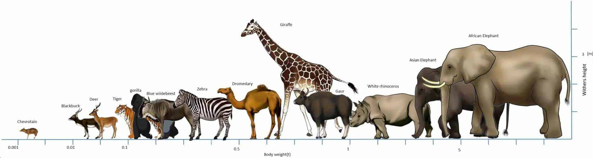
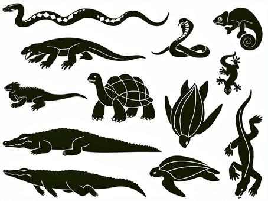
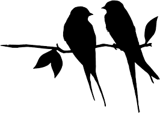

Hayvan krallığı, çeşitli gruplara ait geniş bir tür yelpazesi ile son derece çeşitlidir. Her grup benzersiz özellikler ve davranışlar sergiler.
Memeliler, memeli bezlere sahip olan sıcakkanlı omurgalılar olarak karakterizedir. Canlı yavrular doğururlar ve vücutlarını kaplayan tüy veya kürkleri vardır.
Sürüngenler, vücutlarında pullar bulunan soğukkanlı omurgalılardır. Yumurta bırakırlar ve yılanlar, kaplumbağalar ve timsahlar da dahil olmak üzere çeşitli formları ile tanınırlar.
Kuşlar, tüyleri olan, sıcakkanlı kanatlı yaratıklardır. Uçuş için adapte olmuşlardır ve dünya çapında çeşitli ortamlarda bulunurlar.
Daha fazla bilgi için, Vikipedi'yi ziyaret edin.